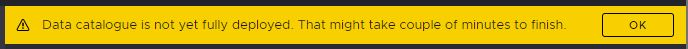
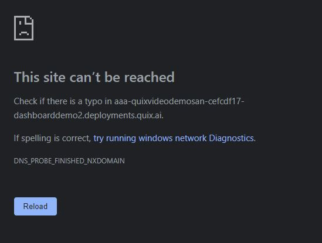

Troubleshooting
This section contains solutions, fixes, hints and tips to help you solve the most common issues encountered when using Quix.
Data is not being received into a Topic
-
Ensure the Topic Name or Id is correct in Topics option of Quix Portal.
-
You can check the data in / out rates on the Topics tab.
-
If you want to see the data in the Data Catalogue please make sure you are persisting the data to the Topic otherwise it may appear that there is no data.
-
If you are using a consumer group, check that no other services are using the same group. If you run your code locally and deployed somewhere and they are both using the same consumer group one of them may consume all of the data.
Topic Authentication Error
If you see errors like these in your service or job logs then you may have used the wrong credentials or it could be that you have specified the wrong Topic Id.
Authentication failed during authentication due to invalid credentials with SASL mechanism SCRAM-SHA-256 Exception receiving package from Kafka 3/3 brokers are down Broker: Topic authorization failed
Check very carefully each of the details.
The following must be correct:
-
TopicId or TopicName
-
Sdk Token
These can all be found in Topics option of Quix Portal.
Broker Transport Failure
If you have deployed a service or job and the logs mention broker transport failure then check the workspace name and password in the SecurityOptions.
Also check the broker address list. You should have these by default:
kafka-k1.quix.ai:9093,kafka-k2.quix.ai:9093,kafka-k3.quix.ai:9093
401 Error
When attempting to access the web API’s you may encounter a 401 error. Check that the bearer token is correct and has not expired. If necessary generate a new bearer token.
Example of the error received when trying to connect to the Streaming Reader API with an expired bearer token
signalrcore.hub.errors.UnAuthorizedHubError
The API’s that require a valid bearer token are:
-
Portal API
-
Streaming Writer API
-
Telemetry Query API
Error Handling in the SDK callbacks
Errors generated in the SDK callback can be swallowed or hard to read. To prevent this and make it easier to determine the root cause you should use a traceback
Begin by importing traceback
Then, inside the SDK callback where you might have an issue place code similar to this:
def read_stream(new_stream: StreamReader):
def on_parameter_data_handler(data: ParameterData):
try:
data.timestamps[19191919] # this does not exist
except Exception:
print(traceback.format_exc())
new_stream.parameters.create_buffer().on_read += on_parameter_data_handler
input_topic.on_stream_received += read_stream
Notice that the try clause is within the handler and the except clause prints a formatted exception (below)
Traceback (most recent call last):
File "main.py", line 20, in on_parameter_data_handler
data.timestamps[19191919]
File "/usr/local/lib/python3.8/dist-packages/quixstreaming/models/netlist.py", line 22, in __getitem__
item = self.__wrapped[key]
IndexError: list index out of range
Service keeps failing and restarting
If your service continually fails and restarts you will not be able to view the logs. Redeploy your service as a job instead. This will allow you to inspect the logs and get a better idea about what is happening.
Possible DNS Propagation Errors
There are currently 2 scenarios in which you might encounter an issue caused by DNS propagation.
- 1. Data catalogue has been deployed but DNS entries have not fully propagated. In this scenario you might see a banner when accessing the data catalogue.

- 2. A dashboard or other publicly visible deployment is not yet accessible, again due to DNS propagation.

Tip
In these scenarios simply wait while the DNS records propagate. It can take up to 10 minutes for DNS to records to propagate fully.
Python Version
If you get strange errors when trying to compile your Python code locally please check that you are using Python version 3.8
For example you may encounter a ModuleNotFoundError
For information on how to setup your IDE for working with Quix please check out this section on the SDK documentation.
Jupyter Notebooks
If you are having trouble with Jupyter Notebooks or another consumer of Quix data try using aggregation to reduce the number of records returned.
For more info on aggregation check out this short video.
Process Killed or Out of memory
If your deployment’s logs report "Killed" or "Out of memory" then you may need to increase the amount of memory assgned to the deployment.
You may experience this:
-
At build time if you want to load large third party packages into your code
-
At runtime if you are storing large datasets in memory.
Missing Dependency in online IDE
Currently the online IDE does not use the same docker image as the one used for deployment due to time it would take to build it and make it available to you. (Likely feature for future however) Because of this you might have some OS level dependencies that you need to install from within your python code to be able to make use of the Run feature in the IDE. The section below should give you guidance how to achieve this.
In your main.py (or similar) file, add as the first line: import
preinstall. Now create the file preinstall.py and add content based
on example below:
-
TA-Lib
This script will check if TA-Lib is already installed (like from docker deployment). If not then installs it.import os import sys ta_lib_pip_details = os.system("python3 -m pip show TA-Lib") if ta_lib_pip_details == 0: print("TA-Lib already installed") else: if os.system("apt-get update") != 0: print("Failed apt-get update") sys.exit(1) if os.popen("if [ -e ta-lib-0.4.0-src.tar.gz ]; then echo \"ok\"; else echo \"nok\"; fi").read().strip() == "ok": print("TA-Lib already downloaded") else: print("Downloading ta-lib") if os.system("apt-get install curl -y") != 0: print("Failed apt-get install curl -y") sys.exit(1) if os.system("curl https://jztkft.dl.sourceforge.net/project/ta-lib/ta-lib/0.4.0/ta-lib-0.4.0-src.tar.gz -O") != 0: print("Failed to download ta-lib") sys.exit(1) zipmdsum = os.popen("md5sum ta-lib-0.4.0-src.tar.gz | cut -d ' ' -f 1").read().strip() if zipmdsum == "308e53b9644213fc29262f36b9d3d9b9": print("TA-Lib validated") else: print("TA-Lib has incorrect hash value, can't trust it. Found hash: '" + str(zipmdsum) + "'") sys.exit(1) if os.system("tar -xzf ta-lib-0.4.0-src.tar.gz") != 0: print("Failed to extract TA-Lib zip") sys.exit(1) if os.system("apt-get install build-essential -y") != 0: print("Failed apt-get install build-essential -y") sys.exit(1) os.chdir(os.path.abspath(".") + "/ta-lib") if os.system("./configure --prefix=/usr") != 0: print("Failed to configure TA-Lib for build") sys.exit(1) if os.system("make") != 0: print("Failed to make TA-Lib") sys.exit(1) if os.system("make install") != 0: print("Failed to make install TA-Lib") sys.exit(1) print("Installed dependencies for TA-Lib pip package") if os.system("python3 -m pip install TA-Lib") != 0: print("Failed to pip install TA-Lib") sys.exit(1) print("Installed TA-Lib pip package")
With this, the first time you press Run, the dependency should install. Any subsequent run should already work without having to install.